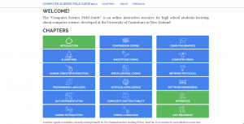

Instagram, the Re-Gram & Creative Commons
BY HEMMA VARA
Instagram is a popular mobile application, infamous for its digital filters with alluring names (think Valencia & Amaro), and the use of the hashtag symbol (#). Instagram allows users to upload pictures or videos colloquially known as “grams”, which can then shared with their Instagram followers and on other social media platforms.
The term “re-gram” has been coined, describing the process whereby an existing gram is copied from one user and reproduced on another’s profile. The reproduction is typically achieved by either a specifically designed application or simply by taking a screenshot of the original gram on a smartphone. In practice this means that humorous or memorable grams will go viral, spreading to other social media platforms such as Facebook and Pinterest. The spread of certain grams can be accelerated by the use of the hashtag; a user can search for grams based on a particular theme by looking up a corresponding hashtag. And if they like what they see, they may feel compelled to re-gram.
With thousands of grams being uploaded to Instagram every second, the question arises as to who owns them. According to Instagram’s Terms of Use, users represent and warrant that they own the content posted, or that they have the right to post such content. They further represent and warrant that the content posted does not violate, misappropriate or infringe on the rights of third parties, which include but are not limited to privacy, copyright, trade mark, and other intellectual property rights. As a side note, while Instagram does not claim ownership over content, the Terms of Use state that users grant Instagram a non-exclusive and worldwide licence to use their content.
One of the problems regarding copyright ownership is that users, including businesses and celebrities, will often re-gram photos without any consideration for the copyright implications. This is certainly not a socially responsible practice, and it is this blissful ignorance that has led to parties being caught out for using other people’s grams. Further, it is also common for media to be re-grammed multiple times to the point where the original source can not be located, and even then, crediting a source in itself is not a defence to copyright infringement. Interestingly, in the United Kingdom, the Enterprise and Regulatory Reform Act 2013 provides a solution to this. It allows a person to use a copyrighted work for free without the consent of the owner if, after a “diligent search” in accordance with the prescribed regulations, the owner cannot be found.
A solution to the danger of the re-gram -- and one that all users can benefit from -- is Creative Commons licensing. There are a variety of licences available to users; all require attribution and some are for non-commercial use only. Users can manually add a CC licence in their Instagram profile description or in the caption of a gram. They can also follow this up by hashtagging “creative commons”, thereby enabling other users to search for openly licensed media.
Instagram does not currently facilitate a platform for users to license their grams with ease, but there are other ways of doing this. For example, Instagram allows users to directly share photos to their Flickr accounts and, in turn, Flickr allows its users to choose a particular CC licence under which they can share their photos. Flickr also enables users to search for photos that have been published online under the different CC licences.
Another example is i-am-cc.org, a third-party archive that allows users to CC-license photos for three months from the date they sign up to the archive. i-am-cc.org’s manifesto explains that the three-month period is imposed as people may forget what they signed up for, and i-am-cc endeavours to be a “legitimate repository of free images”. There are also a variety of websites supplying CC-licensed images for the public that instagrammers may re-use.
It is clear that the re-gram is something that Instagram users should adopt with caution. The use of CC licensing is an excellent mechanism to lawfully perpetuate media, and, the more users who opt in, the more media they have to benefit from. It is yet to be seen whether Instagram will allow users to opt into CC licensing their grams. This may be a smart move, and the issue may become more prominent as more parties are caught out for irresponsible re-grams.
Hemma Vara is a young professional and avid fashionista who resides in Wellington.
New Zealand Government Open Access and Licensing Framework - Version 2
BY MATT MCGREGOR
Two week ago, the New Zealand Open Government Data Programme announced the release of NZGOAL version 2.0.
For those who don’t know, NZGOAL is a great piece of government policy, which was approved by Cabinet in 2010. In essence, NZGOAL advocates for the use of Creative Commons licensing across the state sector.
Some organisations, like Public Service Departments, are directed to use NZGOAL; state services agencies are strongly encouraged, while school Boards of Trustees are invited.
Five years on, we’ve seen a reasonably steady uptake on NZGOAL. Public Service Departments are getting steadily better at using open licensing by default, especially data-heavy agencies like Statistics New Zealand, Land Information New Zealand and Ministry for the Environment.
We’re also seeing uptake in the GLAM sector, with Te Papa, National Library of New Zealand and Auckland Museum all making commitments to open licensing. Schools are also beginning to use CC - we’ve currently got around ninety schools with CC policies, and more to come in the future. Local government and research institutions are also beginning to make moves towards greater openness, which is great to see.
As NZGOAL gradually became the default setting for the release of an increasing number copyright and non-copyright works, New Zealand Open Government Data Programme decided that the policy and guidance materials it uses needed updating.
One important change was the simplification of the review and release process flow-chart. You can read about the other changes here.
Most important, though -- from our point of view at Creative Commons Aotearoa New Zealand, at least -- is that Creative Commons HQ finished its exhaustive process of developing the 4.0 version of the CC licences.
The original version of NZGOAL recommended the use of the Creative Commons 3.0 New Zealand licences. These licences had been ‘ported’ for New Zealand law. If you’re interested in learning more about this, check out this interview we conducted with Andrew Matangi, who led the initial porting process.
While there is nothing wrong with the 3.0 NZ licences, the arrival of the 4.0 licences is a welcome opportunity to ensure that everyone in the world is using the same CC licences. The CC licence chooser -- which many people use to get their standard licensing statement -- also puts some hurdles in the way of those people looking for the earlier, ported licences.
The upshot of all this is that the NZGOAL team have decided to officially recommend the 4.0 licences. While agencies can still decide to use the older 3.0 NZ licences if they want, the guidance material provided by NZGOAL will recommend the 4.0 licences. Over time, we can expect more and more agencies to go down the CC 4.0 road.
For those of you with works licensed under CC 3.0 NZ -- or any other licence -- you don’t need to worry. This licence is still legally valid and robust, and can still be used to licence your work. And if you want to change, that’s fine too.
School Journal Illustration
 School Journal illustration, Colin McCahon, 1940s, Archives NZ. Licensed CC BY-NC-ND.
School Journal illustration, Colin McCahon, 1940s, Archives NZ. Licensed CC BY-NC-ND.Where to next for open education?
BY HUNTER WILSON BURKE
As a student at Victoria University, my main expense -- barring course costs -- is textbooks. Often these are simply a collection of photocopied excerpts from various books and journal articles. While textbook costs vary, it is not unusual to spend thousands of dollars over the course of a degree for books that are often used for little over three months.
In 2002, the Massachusetts Institute of Technology began OpenCourseWare, a project in which they began publishing their course materials under Creative Commons licences, making them freely available to the public for reuse and repurposing. Since then several universities have followed suit, openly publishing course materials and making them available to the commons. In New Zealand a number of tertiary institutions are already part of the Open Education Resources Universitas (OERu), an independent network that offers free online courses for students worldwide. Despite the benefits of Open Educational Resources (OERs) and their increasing popularity among tertiary institutions, the movement has not garnered widespread publicity or institutionalisation.
Throughout my time at Victoria University I have noticed small changes taking place. It is becoming increasingly common for courses to be based on a series of online journal articles instead of a textbook. However, these journal articles are usually not openly licensed, and are instead made available to students and staff members of Victoria University through agreements the university has with other institutions. This means they cannot legally be shared outside of the university domain and are vulnerable to changes in intellectual property law. For example, current negotiations regarding the Trans-Pacific Partnership Agreement could jeopardise the use of several online journal articles at university. Thus, while these changes indicate an awareness and interest in moving forwards from expensive textbooks, they do not address the wider issue of open education.
I spoke with several professors at Victoria University to hear their perspectives on the matter. Ideologically, staff members were very supportive of open education policies being adopted in universities, speaking positively about the benefits of OERs. These include expanding the scope of education, especially to those in financially restrictive situations; enabling them to enrich their students’ learning experience with increased resources; and allowing students to easily teach others what they have learned. Staff were also very enthusiastic about publishing their works openly, allowing them to easily share and distribute their work without worrying about restrictive copyright laws. Despite the ideological alignment and positivity shown by staff, many were at a loss concerning the logistical implementation of OERs and how it would affect the university financially and commercially.
My conversations demonstrated the necessity of increased visibility of the open education movement and its proposed solutions to current problems. There are a number of economic benefits for educational institutions using OERs: for example, the money saved through using existing OERs from reliable institutions; and efficiencies created from the collective action of several institutions creating a large depository of academically sound OERs across a wide range of disciplines and through institutional backing and grassroots community support. The formulation of alternative business models allowing for the sustained production of OERs and an increased awareness of the alternative forms of copyright available is an integral aspect of furthering the use of OERs in tertiary institutions.
Hunter Wilson-Burke is a third-year BA student at Victoria University studying Political Science and Philosophy. He is currently interning at Creative Commons Aotearoa New Zealand, focussing on the use and adoption of open education in New Zealand´s educational institutions.
Greek Gifts: Openly Licensed Translations
BY ANTON ANGELO
Robin Bond, a semi-retired Classics lecturer from Canterbury, has spent his life translating and directing ancient Greek theatre. Over the years he has amassed a series of his own translations of all the Greek plays we know of, in verse, created specifically to be staged, as well as studied.
He could have published these as a volume, a small run from an academic press that would have been the culmination of a career (not that his career is over by a long stretch, you’d have to physically restrain him from teaching, directing and studying). This could have sat in academic libraries, and influenced classics students for years to come, if they bought it. Libraries already have copies of all of these already -- different translations, translated for different purposes, and even editions in the original Greek. In these lean times for library acquisitions sales might have been pretty sparse.
Instead, over lunch, I convinced Robin to send me the manuscripts, I had a book designer look over them and make them beautiful, and we have started to pop them up on our Institutional Repository. The first play we have put up is Antigone, by Sophocles. We will have them all up by Open Access Week (October) this year. They are all published with a Creative Commons Attribution licence (CC BY).
I’m hoping that something will happen. Sitting on the repository is useful, but they are just raw material. Content. I’m hoping that someone will make a lovely web page for them, or include them in a course, realising that they are free for anyone to use. I really hope that someone will stage one of these, using these as the text to work from, because that’s what they were originally for. What I most want though, is someone uses them for something that we haven’t even thought of. That a school picks one up, and turns it into a musical. Or animates one. Or projects it into space on a laser beam for aliens. Actually, I might do that.
Here’s an arduino library to create the Morse code -- so now all I need is the laser...
Anton Angelo is the Repository Manager at the University of Canterbury Library, and a member of the NZCommons editorial board.
The Computer Science Field Guide
by Tim Bell and Marcus Stenfert Kroese
Imagine as a high school teacher needing to teach a subject that you have barely heard of, has never been taught before in schools, and it counts towards a student’s graduating assessment!
This happened to many teachers in 2011, when New Zealand became one of the first countries in the English-speaking world to offer Computer Science as a formal topic in high school. As in many other countries, prior to this, computing had been taught in a way that viewed students as users rather than developers. However, due to New Zealand being an early adopter, there were very few resources available for teachers, and those that were available were disparate, generally being pitched at a level that was too high (e.g. university courses) or too low (e.g. the CS Unplugged activities for primary school children).
In response to this, the Computer Science Education Research Group at the University of Canterbury (also known as the "Department of Fun Stuff") started work on the Computer Science Field Guide, an online "textbook" to serve as a resource for high school students and a guide for teachers. The demand for the resource was so high that it was already getting heavy use while it was still being developed, to the point that we now just call it a "beta" release, and are constantly working to improve it.
The online book has been designed to be engaging and give a quirky approach to the topics, making good use of genuinely interactive activities to enable students to experience the concepts first-hand. It generally uses a constructivist approach, where we aim to lead students through experiences that enable them to construct concepts in their own minds, rather than us simply giving them information. We have developed short videos for the start of each chapter to raise some of the questions that the topic addresses, usually in a humorous way, and presented by a Computer Science student so that the material is authentic and approachable -- for example:
Following in the footsteps of its sister site Computer Science Unplugged, which is intended for primary-aged students, the CS Field Guide does not require any programming of the students. This is to prevent learning programming being a barrier for students to engage with the exciting and surprising ideas in Computer Science; in fact, for some students, finding out what Computer Science is will be a motivator to learn to program.
The guide is licensed under a Creative Commons Attribution-NonCommercial-ShareAlike licence, so users are welcome to take copies and modify them. The material is produced using the open-source Sphinx system, which was originally designed for writing Python documentation, and works from plain-text source files using the reStructuredText format (although we are in the process of changing to a more manageable format). The interactives are written using JavaScript and HTML5, and the videos are released on vimeo.com so that teachers can download them. All of these components are released with the Creative Commons licence so that the entire book can be reconstructed independently. Many people have contributed to different parts of the guide with videos, interactive activities, images and ideas, although most of the writing has been done by just a few people, which has kept it more consistent and coherent.
The guide is currently presented as a website, and the various components are carefully configured to work on as many systems as possible, especially bearing in mind that some schools operate using very old computer labs or old versions of software, while others may primarily use tablets, which places a lot of restrictions on the technologies that can be used effectively. Often if a teacher encounters something that won't work, they need to apply for new software to be installed, and even if it's approved it may take some time, so our goal is to put in as few barriers as possible.
The system we're using can also generate pdf and ebook (epub and mobi) versions of the text. Teachers appreciate being able to print a copy (although this obviously loses the video and interactive components). The ebook versions are still under development as our priority has been to fill out the online web version first.
 Computer Science Field Guide, licensed CC BY-NC-SA
Computer Science Field Guide, licensed CC BY-NC-SA
Why have the resource open?
There were several reasons for choosing to keep the resource as open as possible:
- Open Source is natural for the Computer Science community. Programming languages tend to be open source, or at least available at no cost. From a teaching point of view, this means that students can use the resources on any computer and at home without restriction. Teachers and students come to expect Computer Science resources to be free, and any that aren't may be overlooked. The approach we're taking is modeled after (and in cooperation with) the Runestone Interactive project, which offers several interactive open-source Computer Science books.
- We have limited resources (both time and money), and don't want the book to be limited by our capacity, yet we needed to get something out quickly.
- It's important for the resource to be adaptable. NZ has been leading the world in Computer Science in high schools, and there is strong interest in our resources, so by making it open it can be readily adapted for overseas contexts where the curriculum may be similar but not exactly the same. This also makes translation simple -- no special permission is required.
- We can use other open resources as part of the guide; for example, some xkcd comics relate well to the topic, and can be used in this context.
- Being open gives teachers security that the resource won't go away or date, since someone else can pick it up if we are unable to continue with it.
Teachers have reported copying sections of the guide to their own local school pages, and making selected parts available to students to help them focus; being open gives the flexibility for them to customise it for their students, or simply use it as it is.
 Computer Science Field Guide, licensed CC BY-NC-SA
{kind=link}
Challenges
Writing a school "textbook" with shared authorship and open content creates a number of challenges.
One of these is how to deal with "secret" parts of the book. Many textbooks have a teachers' version that includes answers to questions. Teachers appreciate having these answers available so they can be sure they've got things right and then help stimulate discussion about the question. Openness brings the concern that a student might download the teacher version and subvert their own learning by simply reading off answers instead of thinking though the questions. Our approach has been that the teacher version contains a lot of material that teachers value but students would find uninteresting, and the hope is that students won't be interested in delving in to it for the wrong reasons. In end, students need to realise that the goal is for them to learn, rather than to look smart in class or annoy their teacher!
The teacher version is generated from the same source file as the student version, which makes editing and consistency a lot easier than having two versions. The Sphinx system has commands for the conditional use of sections of text; this can be expanded in the future to accommodate other versions, perhaps for slightly different curricula or year levels.
Another challenge is keeping the resource consistent. Authors have a remarkably wide variety of styles, and we have gone for a slightly quirky and constructivist style. Another author might see the constructivism as not giving all the information, and in an open source environment that could come in and "fill in the gaps", inadvertently undermining the pedagogy. Everyone has opinions on how education should be done, and if the material ends up being done "by committee", then it's hard for it to be vibrant and have character. Also, the author needs to understand the audience (in this case, NZ teenagers and their teachers).
To date, diverse authorship hasn't been a major problem, because all the writing has been done within a small close-knit group, but it's possible that other versions may fork from ours. Our hope is that if a new version is better it will flourish, and if not, it will have been a useful experiment!
Translation of open books is also a challenge that we have yet to tackle properly. An open-source textbook can be copied by others who want to add a fork in the content. If the original guide is changed, the copy becomes out of date. The same applies to translations of the guide, since each translation is also a new version, and later updates may need to be re-translated. This is a wide challenge in open publishing -- for example, until recently, Wikipedia simply allowed different translations of articles to appear independently, so inevitably they would get out of sync.
Another challenge is that the software behind a site needs to be open to make the content truly open. In our case, the main text processing is all done by open-source software, but there are elements (such as the video production) that use proprietary software. The sister site, CS Unplugged, has a similar issue, where currently the source of the main book is available in MS Word. The content is open, but users are forced to use proprietary software to edit the document. They could use OpenOffice, but the formatting gets badly messed up. Of course, the document is available as pdf as well, but that can't be edited easily. Ultimately we may revert to a similar system to the field guide, a plain-text markup language as the source, and then many different formats generated from it.
Developing an open source "textbook" has many challenges, but the benefits of getting it to schools quickly and giving teachers confidence that they can have some control over the content (in principle at least) has been worthwhile.
Tim Bell is a professor in the Department of Computer Science and Software Engineering at the University of Canterbury. His main current research interest is computer science education. Marcus Stenfert Kroese is a final-year Software Engineering student at the University of Canterbury. His Honours research is focused on improving the system that the Computer Science Field Guide is built upon.
Open Education on the road
By Matt McGregor
Last week, we went on the road with Billy Meinke, now with the University of Hawaii and formerly of Creative Commons International. Billy was in the country for the Open Source // Open Society conference (which you can read more about here). We used Billy's arrival as an excuse to organise events promoting open textbooks in Auckland, Wellington and Christchurch, beginning in Auckland on 13 April.
Each event took a similar structure. First, Fabiana Kubke or I introduced Creative Commons, and outlined what Creative Commons Aotearoa New Zealand wanted to see in the sector. Next, Billy talked about some of the open education projects he's been involved in, including the $2billion TAACCCT project to develop open workplace training resources. Finally, Erika Pearson, Simon Hart and Richard White from the University of Otago talked about the Media Text Hack, a successful project to develop an open educational resource -- in a weekend.
Creative Commons and Open Textbooks
By Matt McGregor and Fabiana Kubke
Creative Commons Aotearoa New Zealand
Open Education: OER Advantages and What Happens Next
By Billy Meinke
University of Hawaii
Introducing the Media Text Hack
By Erika Pearson, Richard White and Simon Hart
Erika, Richard and Simon didn't use slides, but have handily put together the Hack Pack, a one-stop shop for all things Media Text Hack related, including a ‘how to’ guide, discussions and reflections, and sample plans/documents for running your own open textbook hack.
Matt McGregor is the Public Lead at Creative Commons Aotearoa New Zealand.
Education: a commons-based future
By Billy Meinke
The following is an edited excerpt of a transcript from the talk Billy Meinke gave at the Open Source Open Society conference in Wellington in April 2015. Meinke is an educational technologist with College of Education at the University of Hawaii, and was formerly on the education team at Creative Commons international HQ.
Digital content is non-rivalrous, meaning that I can take something I have and give it to you, without losing anything myself. You see it all over the place on the internet, memes being shared and remixed and shared again. It’s collective creativity on a massive scale, but the law hasn’t adapted to suit the affordances of the digital world.
Ever-increasingly restrictive copyright laws have been introduced over the last few decades, extending the default length of time it takes for works to enter the public domain automatically. When you create a work in the United States, we’ll be waiting 70 years or more after your death until we can freely reuse your work. [50 years in NZ.] Does that sound reasonable in a digital age? In an age where the marginal cost of copying and transmitting digital artifacts is mere fractions of a penny? I think not.
Copyright (and patents) were originally designed to last a period of time long enough to incentivise the creation of new works. But several times during the 20th century, the default copyright term was exended after big media firms won cases to further lock away the likes of Mickey Mouse, Winnie the Pooh, and the Happy Birthday song.
You made it; now you should be able to exploit it. What if we wanted to share it out? What if we wanted to build things with people who have shared interests, but live across the globe? What if we wanted to set our works free, or contribute to something larger than ourselves? Open licenses for content and code are at the ready and have allowed us to put our collective creativity into the commons how and when we wish to. The Creative Commons, the GNU Public Licence, and others have been critical in allowing this to happen.
The good news is, we are making headway together.
While there are real threats to this (such as the Trans Pacific Partnership), we’re actually sitting on the most robust commons we’ve ever had. Countless free and open-source software projects provides technical infrastructure that we rely on every day. Content and code and data are being put into the commons at a rate that should make every single one of us smile.
In a commons-based future, educational opportunity is ubiquitous.
Anyone who wants to learn can learn. The only barrier to education is the willingness to try. And when you try, you have a pool of shared knowledge at your fingertips that we could have only dreamt of in the past. You don’t think in terms of a textbook, because the web is your learning platform, and you own your educational future. And when you want to know more, you’re connected to other citizens who share your thirst for knowledge. You begin to string together digital artifacts along your journey, and you can see how others navigated the seas of open educational resources before you. You create your own pathways that others can follow after you move on. You participate in the commons.
Arts and culture. You have the world’s cultural heritage available to you. You search the archives of thousands of museums in hundreds of countries, and help curate collections of millions of images and sounds and videos that tell the story of our world before now. You can see streams of artifacts flowing into the commons as new discoveries are unearthed. You can walk the halls of the Louvre or the Smithsonian or any number of places anywhere on earth that you’ve always wished to see. When you find something truly compelling, you take a 3D scan of it and print it at the local library. You place your hands on history, work with it, play with it, understand it. You make new things from the things of ages past. You breathe life into history. You participate in the commons.
Research and science. You stand on the shoulders of giants and tap into a distributed body of research that spans all domains of science. You have access to the latest studies and reports, and to the underlying data and code that produced them. You can ask questions of the data that no one thought to do, or was able to before it was free. You make visualisations from it that help others find meaning in it. You thumb through sciencific studies being done all over the world in real-time. You can be a part of a community of enthusiasts who push the limits of what it means to be a citizen scientist. Science, for you, is a living breathing thing, and you’re participating in the commons.
Government operates openly, bringing a heightened level of transparency and efficiency. Civic data is a few keystrokes away, and the government invites you to make the data more useful and consumable. Legislation is codified and publicly versioned, and you’re notified when a change is proposed or made to the laws you care the most about. Citizens are more informed and involved in the ways their tax dollars are spent, and they support government leaders who work to ensure this transparency continues in perpetuity. You have knowledge about your community and your world in the palm of your hand. You’re participating in the commons.
This commons-based future isn’t a fantasy, as you may have begun to think. Every one of the advantages and capabilities and freedoms I have mentioned are based on technology we have today. And each of them is happening somewhere in the world, but none of them are happening everywhere in the world. By participating in the commons, we can work towards a future where more people have a life that involves the commons. The commons can grow.
Portrait
 Portrait, Kenneth Hall, Auckland Art Gallery, gift of LC Wertheim, 1948. Copyright expired.
Portrait, Kenneth Hall, Auckland Art Gallery, gift of LC Wertheim, 1948. Copyright expired.NZ's OER Foundation
BY MATT MCGREGOR
Wayne Mackintosh is the Director of the Open Education Resource Foundation (OERF), an international non-profit organisation based in Dunedin. The OERF aims to promote the development and use of Open Educational Resources (OER) as a sustainable and renewable resource. Wayne also holds the UNESCO/COL/ICDE Chair in OER based at Otago Polytechnic and the Foundation.
I caught up with Wayne and began by asking about how he entered the world of Open Educational Resources.
“I spent the majority of my academic career working in open distance learning, including the University of South Africa, the biggest provider of distance learning in Africa. In 2002, I moved to New Zealand to help set up a distance and flexible learning centre at the University of Auckland. The idea behind the centre was to promote collaboration in elearning.”
What was the state of open education in 2001?
“It’s important to point out that ‘open education’ is an umbrella term. When we talk about open education, we’re talking about not only open educational resources, but also open source software, open governance, open policy.
“But in 2001, open education was virtually unheard of, and there was very little happening in terms of OER development. The concept itself wasn’t coined until a conference hosted by UNESCO in 2002. This is ironic, of course, as teaching is all about sharing knowledge freely -- it’s fundamental to what teachers do.
“In those days, we focused on the development and adoption of open source software, as this was considered the best way to introduce the concept of open education to the tertiary sector in New Zealand. Thanks to significant investment in that area from the government of the day, we were able to assist with the development of the open source learning management system Moodle.
“Partly as a result of that work, New Zealand has the highest rates of adoption of Moodle in the world.”
How did OER develop over the decade?
“For the first decade, the focus of the movement was on advocacy -- just getting the message out and educating folks about open education. As the advocacy efforts developed, the donor community began to fund OER development. The William and Flora Hewitt Foundation in particular has funded a number of the OER projects, including projects like the open courseware initiative from MIT.
“We’re seeing the fruits of some of that early development now, with the adoption of open policy for major projects like the $2billion TAACCCT fund for educational resources for community colleges.”
What happened after leaving the University of Auckland? How did you get from there to the OERF?
“After the University of Auckland, I moved to represent New Zealand at the Commonwealth of Learning, based in Vancouver, where my work focused on the adoption of open educational practices and open source software in education.
“After leaving the COL, I moved to set up the Open Education Resource Foundation. After looking around the world, I saw that the only higher education institution with an open policy for educational resources was Otago Polytechnic -- which is how the OERF came to be based in New Zealand.
“Happily, the Council of Otago Polytechnic were brave and forward-thinking enough to take us on.”
What does the OERF do?
"The OERF has two flagship initiatives. The first is Wikieducator, which is a platform for the global education community to share and edit educational resources with 58,000 registered account holders.
"The second is the OERu, which is a consortium of higher education institutions committed to providing truly free and open education, including open courses using only open educational resources.
"The mission of the OERu is to develop a sustainable ecosystem of open educational resources. All partner institutions commit to produce two free courses based entirely on OER, providing free access to all learners. Assessment services are then provided on a cost-recovery model. This model enables us to reduce the costs of tuition to the learner to as little as 20% of current costs."
What’s next? What does the future of OER look like?
"There’s still a long way to go. From my perspective, OER is inevitable -- no model of knowledge production can match the efficiency of OER. The real challenge, though, is how long it takes for institutions to develop a culture of sharing. Working for cultural change within traditional and conservative institutions -- as higher education institutions tend to be -- takes time.
"It’s important that we keep working to develop skills within the tertiary sector. This is still relatively little knowledge or expertise in OER, and this will need to change in order to make OER development and use mainstream.
"From a policy level, we need a stronger commitment from central government and tertiary education institutions to ensure that all educational resources produced by publicly funded institutions are made openly available. People often ask about the ‘sustainability’ of OER. It’s not rocket science: we already fund the production of open educational resources. We just need to make sure the resources that are already produced within universities are made available as OER using Creative Commons licences."
What should New Zealand tertiary education institutions do?
"It’s essential that institutions pass policies to support the development and use of OER. This is going to take some time. One of the difficulties in working the tertiary sector is that institutions are competitive with each other. We say that if institutions are worried about competition, they should join the OERu. As I said earlier, our open model enables us to reduce the costs of tuition to the learner to 20% of costs at existing mainstream institutions. The OERu is the new competition."
Matt McGregor is the Public Lead at Creative Commons Aotearoa New Zealand.
Except where otherwise noted, copyright content on this site is licensed under a Creative Commons Attribution 4.0 International Licence.